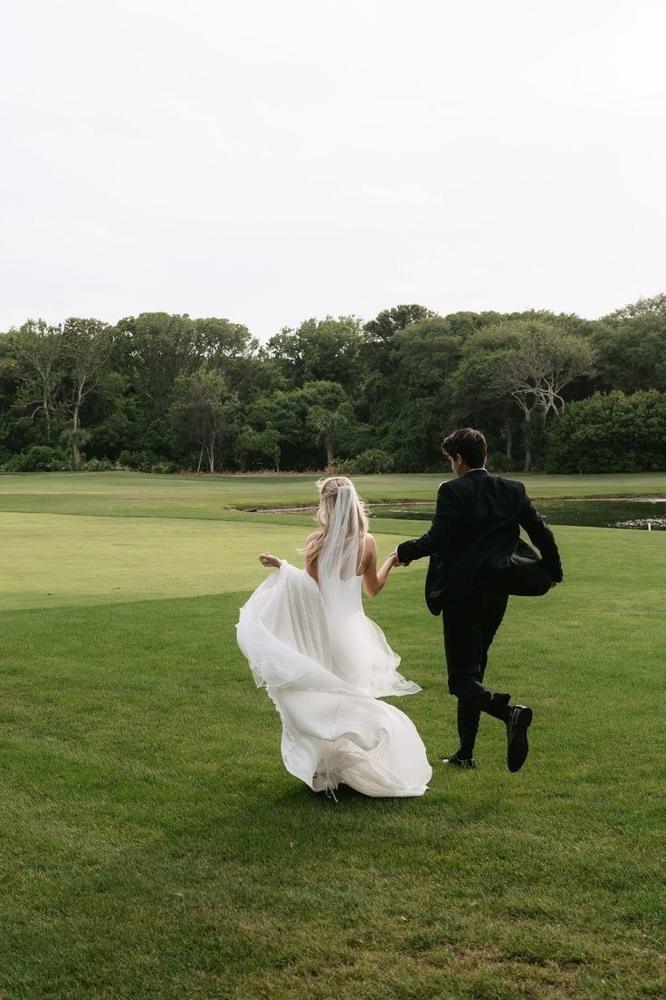
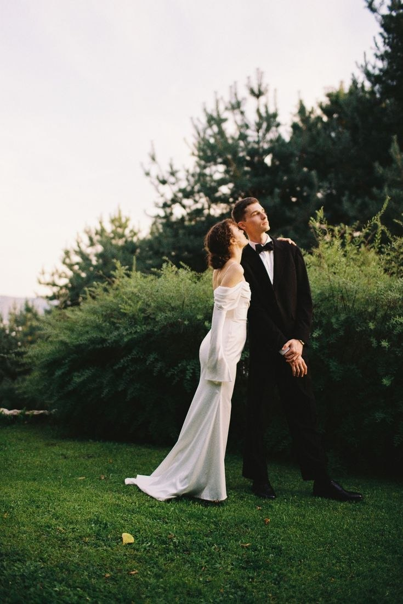
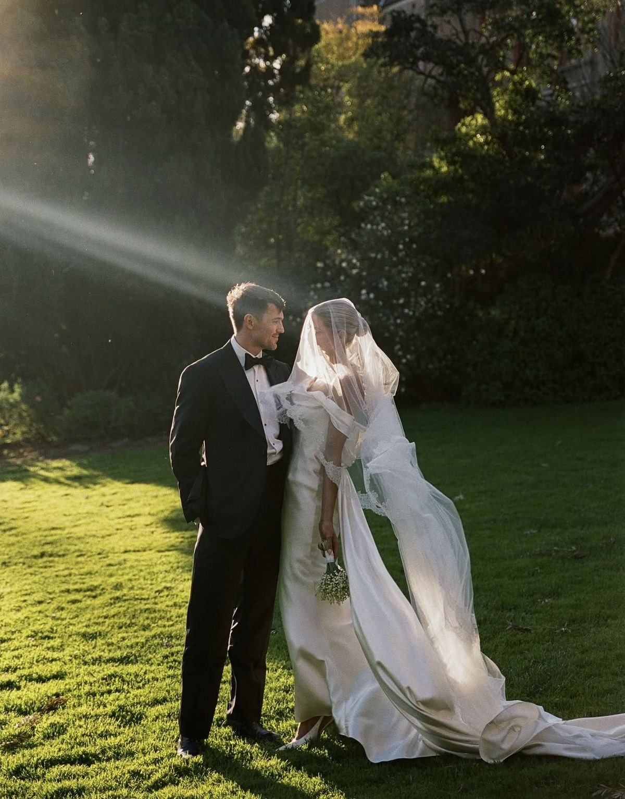
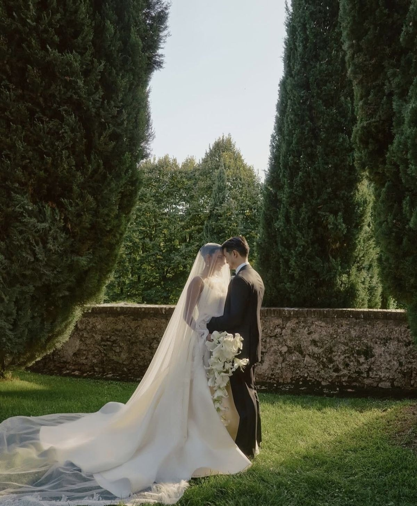
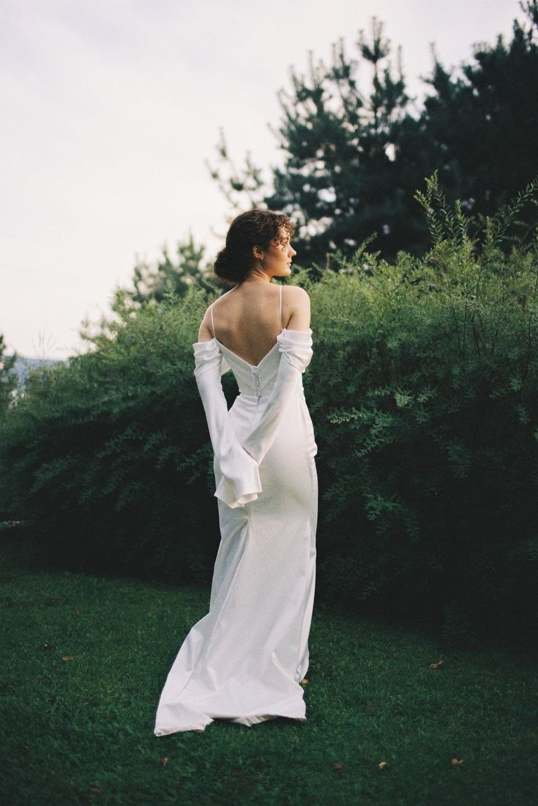
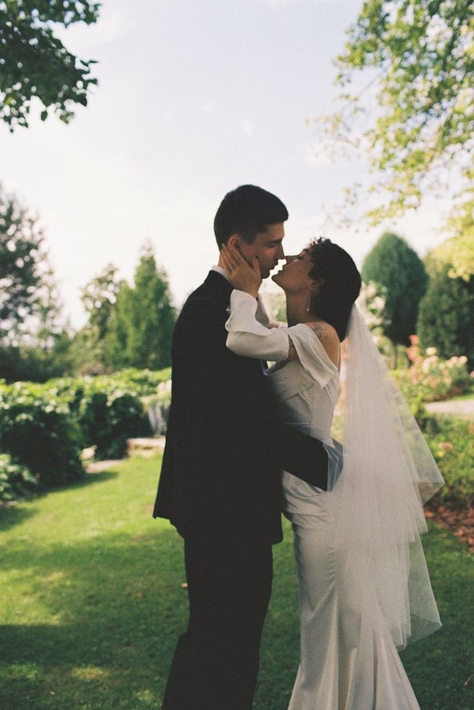
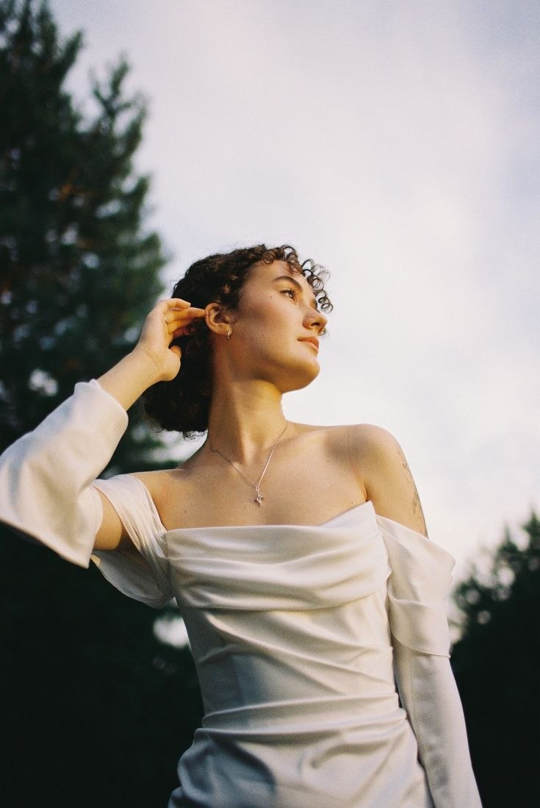

AMÉLIE & THEODORE
24TH SEPTEMBER 2027

Save the Date
WE ARE GETTING MARRIED
24TH SEPTEMBER 2027

2027. SEPTEMBER 24.
AMÉLIE & THEODORE
are getting married



Amélie & Theodore
WARMLY WELCOME

WELCOME TO OUR WEDDING
We’re so excited to share this special moment of our lives with you. Here you’ll find all the details about our big day in West Kensington — from the marriage ceremony at St Mary’s Church to garden cocktails, candlelit dinner, and dancing.
Amélie and Theodore



RSVP
Please let us know if you’ll
be joining us
Kindly respond by August 24th, 2027 so we can
plan with love. Submit your reply below.

AND THE BLESSING OF LOVE WE INVITE YOU TO CELEBRATE
OUR HOLY MATRIMONY
Amélie Laurent Theodore Whitmore
FRIDAY, SEPTEMBER 24, 2027
ST MARY’S CHURCH, WEST KENSINGTON
HAMMERSMITH ROAD · LONDON W14 0QL
We Await You
LONDON GARDEN ARCHIVES · OUR CHAPTERS

Our Love Story

From a rainy autumn afternoon in Kensington to quiet Sunday walks beneath the willow trees of Holland Park, every chapter has written itself with effortless grace. On the twenty-fourth of September, we gather at St Mary’s Church to begin our forever.
DISCOVER OUR DAY

Order of the Day
Arrival & Welcome
1:30 PM
String quartet prelude &
welcome at St Mary’s Church
Holy Matrimony
2:00 PM
Exchange of vows, rings &
choral blessing into forever
Wedding Banquet
4:30 PM
Garden champagne, canapés &
candlelit wedding breakfast
Wedding Cake
7:30 PM
Cutting our three-tier vanilla,
elderflower & lemon curd cake
Grand Finale
10:00 PM
First dance, sparklers & music
beneath the Kensington stars
The Venue
St Mary’s Church, West Kensington
Hammersmith Road · London W14 0QL, UK

ATTIRE & PALETTE · GARDEN FORMAL
Dress Code
We kindly invite our guests to celebrate with us in timeless garden elegance inspired by these four tones:
RÉPONDEZ S’IL VOUS PLAÎT · BEFORE 24 AUGUST 2027
Kindly Respond
We cannot wait to celebrate with you in London. Please let us know if you will be joining us.